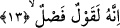
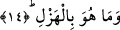

yemin ediyor. Sonra ikinci olarak bu onbirinci âyette “vessemâi zâtirrac’i” buyurarak bu
sefer yağmurlu gökyüzü şeklinde gökyüzünü niteliyerek yemin ediyor. Yeryüzü de
bitkilerle donatılmış yeryüzü şeklinde niteleniyor. Böylece birçok faydaya temas
edilerek insanlara verilen nimetlere işâret olunuyor. Ayrıca Allah Teâlâ’nın gökte ve
yerde mükemmel kudretine ve tam ilmine işâret olunmuş oluyor. Ayrıca bu âyette ikinci
neş’ette rac’ sâhibi ruh semasına ve sad’ sâhibi beden arzına ve bu arzın ölü iken ruh ile
inşikak’ına (yarılmasına) ya da ittisalden sonra (bitiştikten sonra) şakkına yâni
yarmasına işâret edilmektedir.
13. Kur’an (hak ile bâtılı) ayıran bir sözdür.
“Şüphesiz” insanın ilk başlangıcını ve âkıbetini dile getiren âyetler dâhil olmak üzere
bütün gerçekler içinde yazılı olan “ o Kur’an” hak ile bâtılı “ayırıcı bir sözdür.” Bu
ayırma işi o kadar ileri derecededir ki, âdetâ Kur’an, ayırmanın bizâtihî kendisidir. Bu
ifâde tıpkı fârık, yâni ayıran anlamının “el-furkan” şeklinde ifâde edilmesine benzer.
Okuduğumuz âyette yer alan “kavl”, kelam ve söylenen söz anlamına kullanılır.
14. O, asla bir şaka değildir.
Burada yer alan ve şaka şeklinde tercüme ettiğimiz kelime “el-hezl” kelimesidir.
Anlamı şaka, oyun demektir.
Fethu’r-Rahman’da ifâde edildiğine göre hezl demek herhangi bir sözün hiç ilgisi
yokken konulmuş olduğu anlamın dışında başka bir anlamda kullanılması demektir. Cidd
ise bunun tam zıttıdır. Cidd; söz konuşan kimsenin bununla sözünün gerçek anlamını
kasdetmesi demektir.
Buna göre şöyle mânâ verebiliriz: Bu Kur’an’da şaka bulaşmış, şaka şaibesi taşıyan
ciddiyetsiz hiçbir söz yoktur, tam tersine Kur’an’ın tamamı olduğu gibi ciddiyetten
ibarettir, içinde en küçük bir şaka bile yoktur. Onun için Kur’an’ın kendisiyle sapıkların
hidâyete ermesi, azgınların ona boyun eğmesi kendisinin şanındandır.
O oyun ve eğlence; bâtıl, efsane, maskaralık ve istihzâ değildir.
Âyetten ortaya çıkıyor ki herhangi bir kimse Kur’an’a şaka yollu yaklaşıp onunla
eğlenirse kâfir olur.
Hediyyetu’l-Mehdiyyin isimli eserde şöyle deniyor: Herhangi bir kimse Kur’an’dan
herhangi bir âyeti inkâr ederse veya alaya alırsa ya da onu kusurlu görürse kâfir olur.